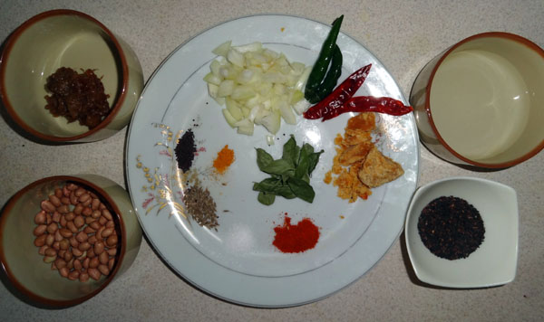

Pachi Pulusu

Ingredients:
- Tamarind - lemon-sized ball
- Green chilies - 4 to 5
- Jaggery - small piece
- Coriander leaves - a handful (chopped)
- Curry leaves - a few
- Mustard seeds - 1/2 teaspoon
- Cumin seeds - 1/2 teaspoon
- Red chili powder - 1/2 teaspoon
- Turmeric powder - 1/4 teaspoon
- Asafoetida (hing) - a pinch
- Salt - to taste
- Oil - 2 tablespoons
- Water - 2 cups
Recipe:
- Soak tamarind in warm water for about 15-20 minutes.
- Squeeze out the pulp and discard the seeds and fibers.
- In a mixing bowl, combine tamarind pulp, jaggery, salt, red chili powder, turmeric powder, and water.
- Heat oil in a pan and add mustard seeds. Once they splutter, add cumin seeds, green chilies, and curry leaves.
- Now, pour the tamarind mixture into the pan and bring it to a boil.
- Simmer for a few minutes until the raw smell of tamarind disappears and the mixture thickens slightly.
- Remove from heat and garnish with chopped coriander leaves.
- Pachi Pulusu is ready to serve. Enjoy it with steamed rice!